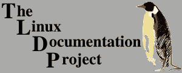

|  |
| home | HOWTOs | Guides | FAQs | man pages | Linux Gazette | LinuxFocus |
Linux Documentation Project Manifesto |
|
Revised by: David S. Lawyer (dave@lafn.org)
Describes the goals, status, documentation conventions, and license
requirements of the Linux Documentation Project.
1. OVERVIEWThe Linux Documentation Project is working on developing free, high quality documentation for the GNU/Linux operating system. The overall goal of the LDP is to collaborate in all of the issues of Linux documentation. This includes the creation of "HOWTOs" and "Guides". We hope to establish a system of documentation for Linux that will be easy to use and search. This includes the integration of the manual pages, info docs, HOWTOs, and other documents. LDP's goal is to create the canonical set of free Linux documentation. While online (and downloadable) documentation can be frequently updated in order to stay on top of the many changes in the Linux world, we also like to see the same docs included on CDs and printed in books. If you are interested in publishing any of the LDP works, see the section "Publishing LDP Documents", below. The LDP is essentially a loose team of volunteers with minimal central organization. Anyone who would like to help is welcome to join in this effort. We feel that working together informally and discussing projects on our mailing lists is the best way to go. When we disagree on things, we try to reason with each other until we reach an informed consensus. 2. CURRENT PROJECTS and GETTING INVOLVEDCurrently, the major effort of the LDP is the writing of HOWTOs. If you think you would like to write a certain HOWTO first check to see if one already exists on your topic. If so, you may contact the maintainer and offer to help. If there is no HOWTO about it, you may want to create a new HOWTO. See the LDP Author Guide (formerly the HOWTO-HOWTO) and/or the HOWTO-INDEX for more details. The "Guides" are large book-size LDP documents covering broad topics such as system administration. We also maintain the man-pages for C-programming and devices. Other tasks include checking the HOWTOs for clarity and errors, improving our website, and developing an integrated system of documentation for Linux. If you are interested in any such project (other than writing HOWTOs), contact the current LDP coordinator Guylhem Aznar at guylhem@metalab.unc.edu or email the LDP at feedback@en.tldp.org. 3. LDP WEBSITESThe LDP has over 250 mirror sites worldwide where one may inspect and/or download LDP documents. The main site is http://tldp.org. Go here to find the list of mirror sites and then use the nearest mirror site. 4. DOCUMENTATION CONVENTIONSHere are the conventions that are currently used for LDP documents. If you are interested in writing another document using different conventions, please let us know of your plans first.
5. LICENSE REQUIREMENTSAnyone may copy and distribute (sell or give away) LDP documents (or other LDP works) in any media and/or format. No fees are required to be paid to the authors. It is not required that the documents be modifiable, but it is encouraged. You can come up with your own license terms that satisfy these conditions, or you can use a previously prepared license. The LDP has a boilerplate license that you can use if you wish. Some people like to use the GPL, while others write their own. There is a project underway to create a special GPL license just for documents and this may turn out to be a good choice. The copyright for each document should be in the name of the principal authors. "The Linux Documentation Project" isn't a formal entity and thus can't be used as a copyright owner. 6. BOILERPLATE LICENSEHere is a sample copyright notice and "boilerplate" license you may want to use for your work:
Copyright (c) 2000 by John Doe (change to your name)
Please freely copy and distribute (sell or give away) this document in
any format. It's requested that corrections and/or comments be fowarded
to the document maintainer. You may create a derivative work and distribute
it provided that you:
Send your derivative work (in the most suitable format such as
sgml) to the LDP (Linux Documentation Project) or the like for posting
on the Internet. If not the LDP, then let the LDP know where it is
available.
License the derivative work with this same license or use GPL.
Include a copyright notice and at least a pointer to the license used.
Give due credit to previous authors and major contributors.
If you're considering making a derived work other than a translation,
it's requested that you discuss your plans with the current maintainer.
7. PUBLISHING LDP DOCUMENTSIf you're a publishing company interested in distributing any of the LDP documents, read on. By the license requirements given previously, anyone is allowed to publish and distribute verbatim copies of the Linux Documentation Project documents. You don't need our explicit permission for this. However, if you would like to distribute a translation or derivative work based on any of the LDP documents, you may need to obtain permission from the author, in writing, before doing so, if the license requires that. You may, of course, sell the LDP documents for profit. We encourage you to do so. Keep in mind, however, that because the LDP documents are freely distributable, anyone may make copies and distribute them. Thus the parts of a book which may be freely copied should be separated (and identified) in such a manner as to facilitate copying them without infringing on the copyright of other material. We do not require you to pay royalties from any profit earned by selling LDP documents. However, we would like to suggest that if you do sell LDP documents for profit, that you either offer the author royalties, or donate a portion of your earnings to the author, the LDP as a whole, or to the Linux development community. You may also wish to send one or more free copies of the LDP documents that you are distributing to the authors. Your show of support for the LDP and the Linux community will be very much appreciated. We would like to be informed of any plans to publish or distribute LDP documents, just so we know how they're becoming available. If you are publishing or planning to publish any LDP documents, please send mail to feedback@en.tldp.org. It's nice to know who's doing what. We encourage Linux software distributors to distribute the LDP documents on CDs with their software. The LDP documents are intended to be used as "official" Linux documentation, and we are glad to see distributors bundling the LDP documents with the software. |
| home | HOWTOs | Guides | FAQs | man pages | Linux Gazette | LinuxFocus |
| Previous Manifesto: 1999-10-18 | Last Modified: 2003-07-24 | feedback@en.tldp.org |